Owls are birds of prey that belong to the order Strigiformes, known for their solitary,
nocturnal behaviour. They have sharp talons, binaural hearing and can take silent flights. They
feed on mostly small mammals, insects and other birds, except for some that hunt fish instead.
Owl habitats
Where can these owls be found? Well, pretty much everywhere! Except for Antarctica because it's too
cold. The habitats can range from dense, lush rainforests to open deserts. Different species thrive
in different habitats, like the Great Grey Owl, which excels in the snowy, boreal forests of North America.
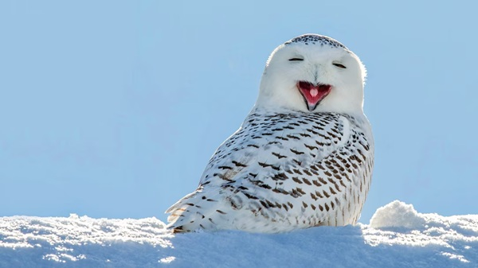
A snowy owl in a cold region by James Pintar.
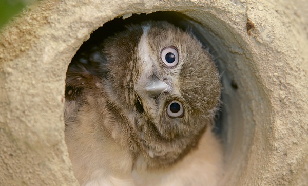
A burrowing owl in a burrow by Clyde Nishimura
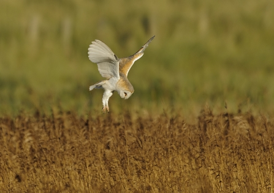
A barn owl hunting in the fields by John Bridges
Species of Owls
There are many species of owls. They are mainly split into 2 families:
True Owls
The true owl family, also known as Strigidae, consists of over 190 species of owls. Here are some
notable species:
Owl Name
Description: Click on one of the photos to learn more about the owl!
Barn Owls
The barn owl or Tytonidae family, unlike the true owl family, has around 20-30 species. They are
distinguished by their heart-shaped faces, and are some of the best nocturnal hunters in the wild!
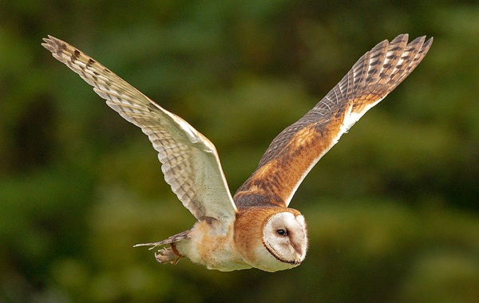
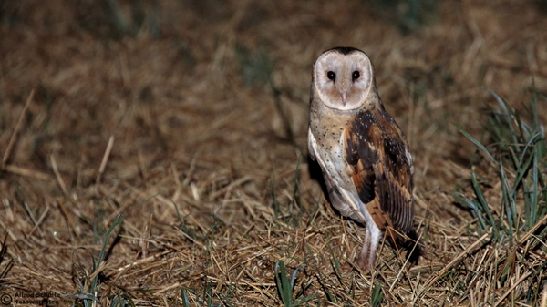
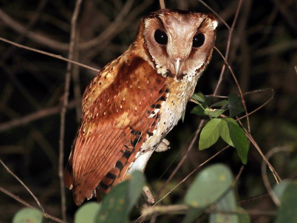
Owl Name
Description: Click on one of the photos to learn more about the owl!
Hunting Cycle of Owls
There are many interesting details when it comes to owls hunting their prey! Let's have a look!
Stage 0: Hunt Begins
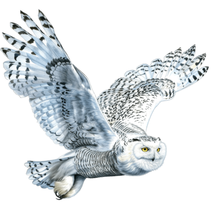
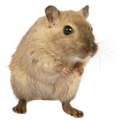
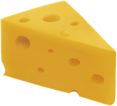
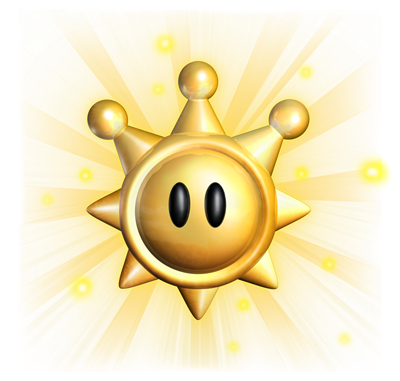
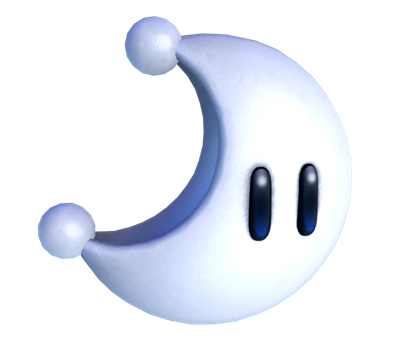
Text
Text
Fun Facts about Owls!
Owls can rotate their heads up to 270 degrees!
The largest owl out there is the Blakiston's Fish Owl, with a wingspan of over 2 metres!
A single barn owl can eat up to 3000 rodents in one breeding season!
It's Quiz Time!
With your newfound knowledge about owls, challenge yourself with this quiz!
Not submitted
Owl Minigame
Hedwig is feeling hungry! Help him get rodents by clicking on the dirt tiles. But watch out! Don't get blown up by 3 bombs!
 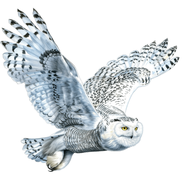
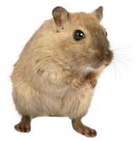
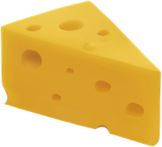
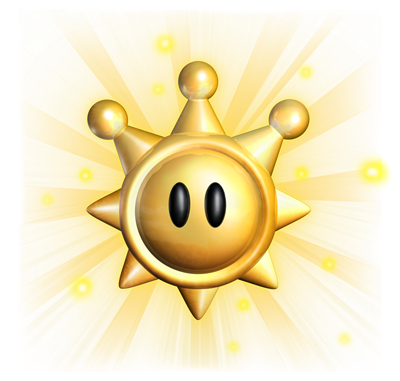
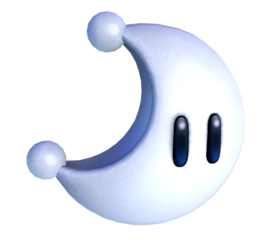
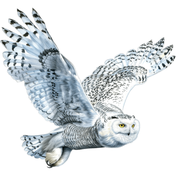
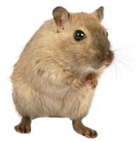
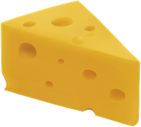
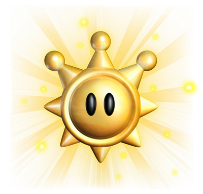
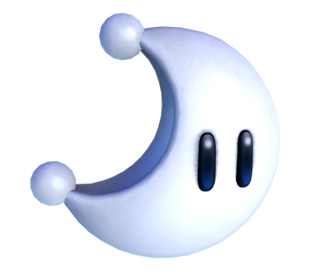